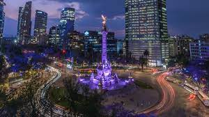

Blog de ciudades
Patrimonio Cultural: El Centro Histórico alberga impresionantes monumentos como la Catedral Metropolitana y el Palacio Nacional, así como sitios arqueológicos como Teotihuacán.
Gastronomía Variada: Desde los sabrosos tacos hasta la alta cocina mexicana en restaurantes reconocidos internacionalmente.
Arte y Museos: Destinos como el Museo Nacional de Antropología, el Museo Frida Kahlo y el Museo de Arte Moderno ofrecen una visión fascinante del arte y la cultura mexicana.
Vida Nocturna Vibrante: Bares, clubes y cantinas llenan las calles de la ciudad, ofreciendo una amplia gama de experiencias nocturnas para todos los gustos.
